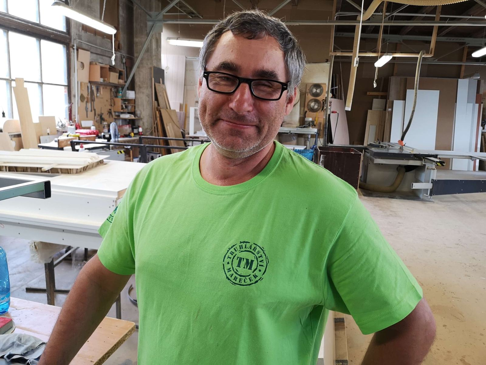
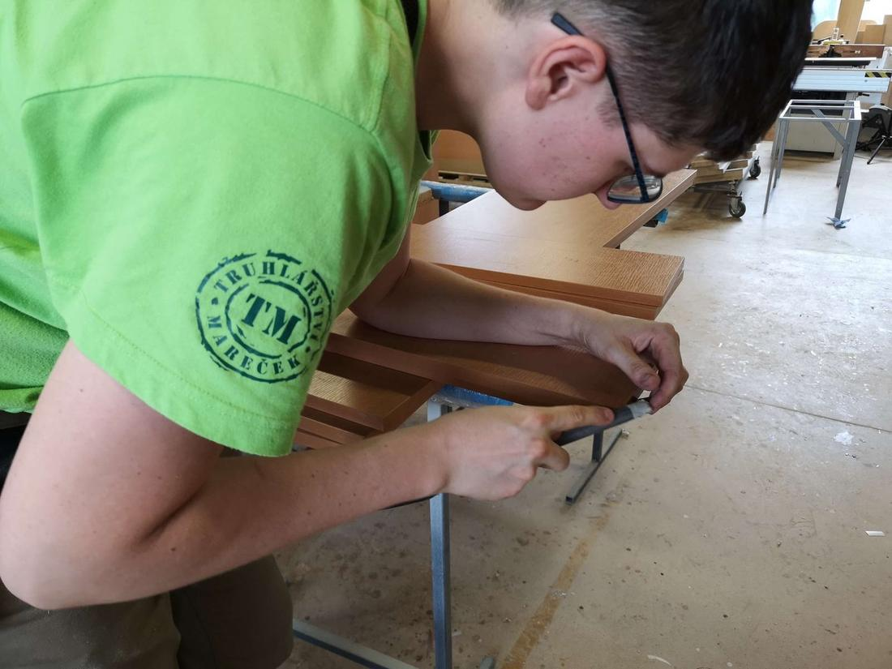
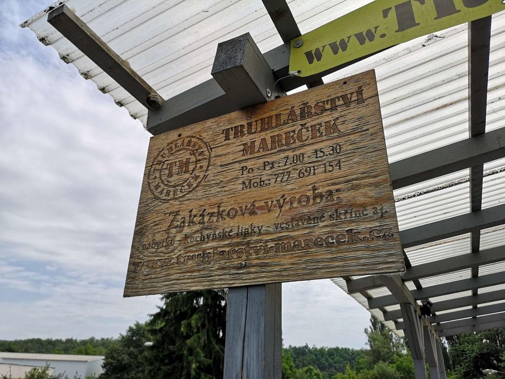
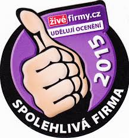
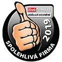
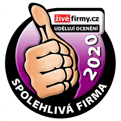
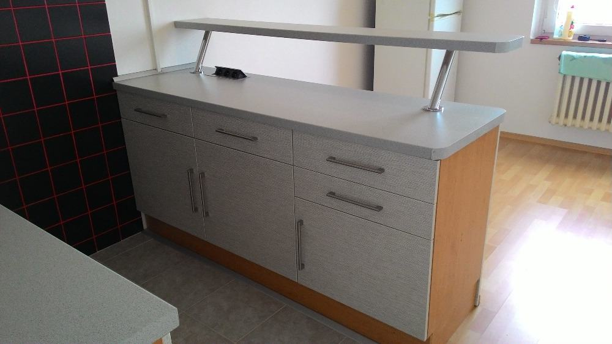
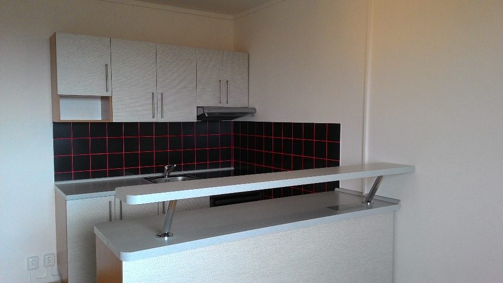

Česká cena za architekturu 2021
Podíleli jsme se na interiéru vily v Herolticích od Ing. arch. Martina Klimeckého, která cenu získala.
Realizace vilyTruhlářská dílna Jiřího Marečka v Brně-Řečkovicích. Nábytek na zakázku vyrábíme od roku 1994 – od návrhu po montáž u vás doma.

32let v provozu
Jmenuji se Jiří Mareček, jsem vyučený stolař a nábytek na zakázku vyrábím od roku 1994. Nejdřív se ptám, jak budete nábytek používat, jaké máte rádi barvy a co vám vadí na tom současném. Teprve potom řežeme dřevo.
Řežeme, hoblujeme, brousíme, dlabeme, čepujeme, klížíme a lakujeme. Zvládáme i frézování dřeva a další truhlářské techniky, takže vyrobíme prakticky cokoli ze dřeva.
Dřevo je přírodní a ekologický materiál, podobně jako dýha. Pracujeme ale i s laminem. Můžete nám dodat vlastní návrh, nebo vám předložíme řešení od bytového architekta.
Vyrábíme nábytek do bytů a domů, kanceláří a komerčních prostor. S architektem realizujeme interiéry restaurací a dodáváme dřevěné vybavení dětských hřišť a škol.
Máte dokumentaci a vizualizace od designéra nebo architekta? Pošlete nám je a nábytek podle nich vyrobíme.
Každou zakázku s vámi probereme do detailu: jaké máte představy, jaké barvy máte rádi a jak budete nábytek používat. Doma i v práci se máte cítit dobře.
Masiv není levná věc a nebudeme to zastírat. Vydrží ale desítky let. Když se k vašemu záměru hodí jiný materiál, poradíme vám ho.
Stejně jako materiál řešíme i doplňky – panty, pojezdy, úchytky. Odstín sladíme s podlahou nebo nábytkem, který už máte.
Termín zaměření i montáže přizpůsobíme vám. Proto se k nám klienti vracejí s dalšími zakázkami.
Díky vybavení dílny pracujeme přesně a rychle, a proto můžeme vyrábět ve vysoké kvalitě za rozumnou cenu.




Portál Živéfirmy.cz nám udělil ocenění Spolehlivá firma každý rok od roku 2013 do roku 2025.
 2013
2013 2014
2014
2015 2016
2016
2019
2020 2021
2021 2023
2023 2024
2024 2025
2025Podíleli jsme se na interiéru vily v Herolticích od Ing. arch. Martina Klimeckého, která cenu získala.
Realizace vilyServer iDNES.cz oslovil Jiřího Marečka jako odborníka na zpracování dřeva k molu na Brněnské přehradě, ze kterého prkna pouštěla smůlu.
Článek na iDNES.czZdravím Vás,
moc děkuji za precizní výrobu nábytku, moc krásná práce, naprostá spokojenost, chválím i kluky šikovný. Děkuji.


Napište nám, kam nábytek přijde, jaké má mít přibližné rozměry a kdy ho potřebujete.